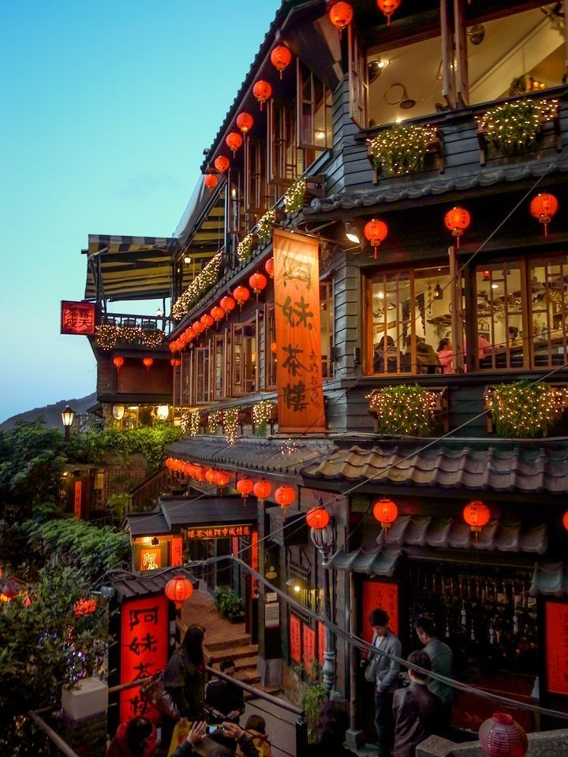
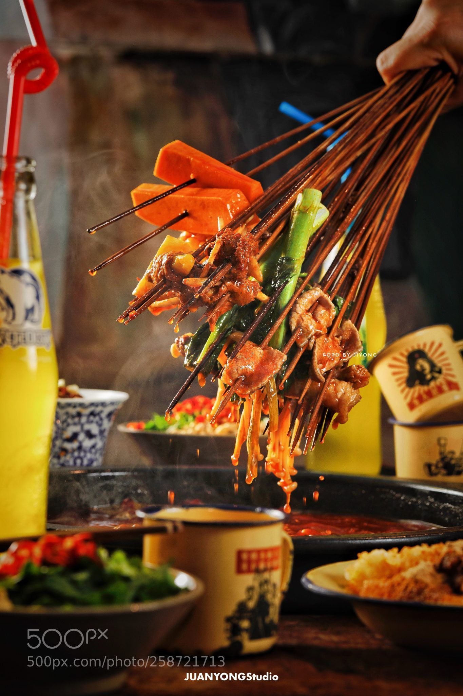
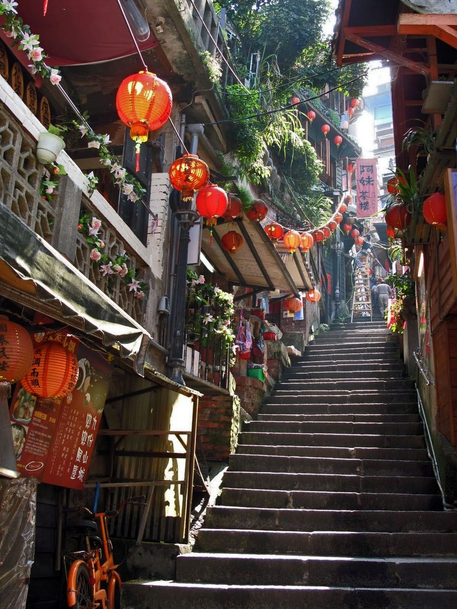

추천하는 중국(베이징) 코스!-(3일)
- [1일차-중국에 왔으면 당연히 와봐야지!]
만리장성 중 가장 잘 알려진 팔달령 장성은 베이징에서 북서쪽으로 70km 거리에 위치해 있다
베이징 근교에는 보존이 잘 되어 있어 관광객들이 가장 많이 찾는 팔달령 장성과 관문인 거용관(居庸关) 등 여러 장성을 견학할 수 있다.
중국만리장성 (투어) ->Beijing Great Wall National Park->바달링 국립삽립공원
- [2일차-베이징 하루 정복 코스]
이른 아침부터 저녁까지 바쁘게 움직이면 베이징의 주요 관광지는 다녀올 수 있다,
호텔에서 택시로 천단공원 남문 이동한다. 지하철로 이동할 경우, 반나절코스와 동일하다..
천단공원->전문대가->천안문광장과 그 주변->천안문과 고궁박물원->경산공원->남라고항->십찰해->왕부정대가
- [3일차-패키지 같은, 잘 정돈된 현지 여행!!]
마지막날인데, 제대로 한번 누려보고 가야지!
현지를 가장 잘 만날 수 있는, 그런여행이다.
서커스/금면왕조소->마사지코스->베이징 유리창 문화거리->이화원->798예술구->베이징 옹화궁

추천하는 음식!
BEST 5!
1.북경오리구이겉은 타고 속은 부드러우며, 느낌은 신선하고, 향기롭고 느끼하지 않다. 정말 잘하는곳 가면 살살녹는다 진짜로
2.칭기즈칸 구이불 냄비에 양념한 양고기 와 대파를 같이 구워 먹는 요리로 매우 담백하고 고소한 요리이다. 개인적으로는 누린(?)향이 많이나서 향에 민감하면 패스!! 난 맛있었당
3.작장면고명을 각각 다른 접시에 차려 나와 식탁에서 면 그릇에 후다닥 던지듯 얹어 서빙을 한다. 짜장면과는 다르게 짜다... 진짜 짠 면요리 짭짤하니 맛있었당
4.자오쯔크기가 한국에 비해 작으며 소가 다양하고 만두피를 물만두처럼 얇게 밀며 또한 중국에서 가장 저렴한 가격에 한 끼를 해결할 수 있는 음식이기도 하다! 만터우는 호빵느낌 헷갈리지 말기!!
5.꿔바로우쫀득하며 매우 시큼한 소스와 고소한 돼지고기 튀김의 조화를 보여주는 음식이다. 많이 먹어본 음식ㅋㅋ

내가 주는 후기!
사실 가장 강렬하게 기억이 나는건 내리쬐는 태양과 끝도없이 이어진 만리장성.. 야시장도 좋았는데 굉장히 물가도 싸긴 쌋지만 진짜 특이한 음식이 많았던걸로 기억한다.
근데 여기서 소매치기 당해서 슬픈기억이 있다... 아침을 굉장히 푸짐하게 먹고 저녁은 간단히 주는걸로 기억한다. 음식도 기름을 많이써서 느글느글거리다가 체했던 기억이 있다..
소화제를 챙겨가자! 땅이 큰만큼 볼것도 많다!